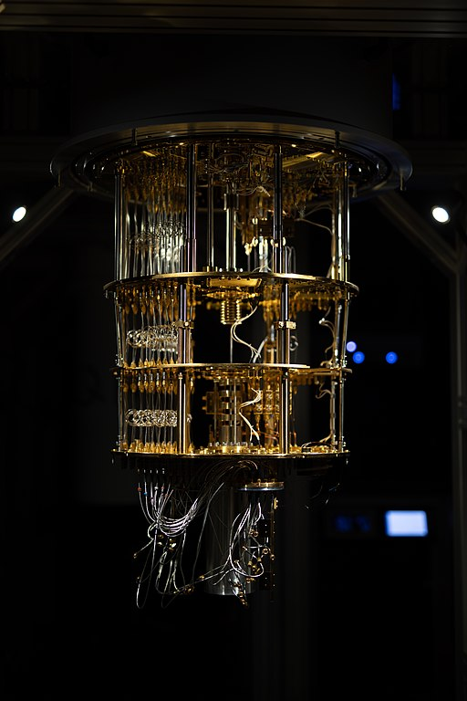

Quantum Computers
Quantum computers are based on qubits – these can be any two level quantum system, such as the spin-up and spin-down states of an electron, or different energy levels in a superconductor. The 2 states correspond to 0 and 1 (written $|0\rangle$ and $|1\rangle$\ in Dirac’s Bra-Ket notation), like the binary of a classical computer and are called the computational basis– but quantum mechanics means that only being in one of these states isn’t the only option for the qubit. The concept of quantum superposition means that any linear combination of the 0 and 1 states $a|0\rangle$ + $b|1\rangle$ so that $a^2 + b^2 = 1 $is also valid. The best way of considering this is as the qubit actually being in both states at once – until it’s measured to discover its value when it will take one value or the other. The probability that $|0\rangle$ is measured is $a^2$, and similarly for $|1\rangle$

What are some ways a qubit can be constructed? In recent years, constructions using light (photonics) have become popular. The two levels could be the polarisation of the wave, whether or not a photon takes a certain path through a beam splitter, or any other photon property that has 2 possible values. Unlike most other qubit types, these work at room temperature and don’t need to be cooled to near 0K. Ion traps are another method of implementation, which use spin. An ion of an element such as calcium is held in place by magnetic fields, and lasers are used to increase or decrease the energy level and change the state $|0\rangle$ is the ground state and $|1\rangle$ is an excited state (it needs to have a lifetime of at least one second so that computation can be done). A similar technology is the quantum dot, where an electron is trapped in a super-conductor. Its spin states can be used as the $|0\rangle$ and $|1\rangle$. Finally, many qubits are based on superconducting circuits. A thin insulator is placed between two superconducting “islands”, which creates a current. The different possible energies of the circuit represent the computational basis. Because there are many discrete energy values, the qubit needs to be constructed so that the difference between the $|0\rangle$ and $|1\rangle$ states is different to the different between any other consecutive states. Super-conductance needs the materials to be chilled to near absolute 0, so implementing qubits in this way requires cryogenic cooling.
Image source: Ragsxl, CC BY-SA 4.0, via Wikimedia Commons
All of these qubit types involve delicate physical controls which are prone to noise – for example, the difference in energy when the ion absorbs a photon in the ion trap qubit is about $2 x 10^{-29}$ so any extra heat could cause an error. Photonic qubits can experience noise caused by photon loss, and all of these systems could be affected by entanglement with the outside world, where the states of 2 particles become linked so that any change to one causes a change to the other. This last one, in particular, can’t be avoided – qubits can’t be totally isolated from the outside world. Therefore, quantum computing needs error detection methods to be effective.

Using qubits to run programs requires logic gates. Some of these are similar to classical gates, such as the NOT gate which changes $|0\rangle$ to $|1\rangle$. But the extra potential states of qubits require different gates, and it’s easiest to describe these in terms of matrices and the Bloch Vector. The Bloch vector is a way of visualising the 2-state system in geometric terms as a unit sphere in 3-space. The north and south poles are the computational basis. Then the qubit could be at any point on the surface of the sphere, and logic gates move the position across the surface. The points of the X axis at the surface are also particularly useful, and are described as
$$\ |+\rangle=\frac{1}{\sqrt{2}}\ (\ |0\rangle +\ |1\rangle)$$
$$\ |-\rangle=\frac{1}{\sqrt{2}}\ (\ |0\rangle -|1\rangle)$$
The coefficients of an arbitrary linear combination are described in terms of the angles with the Z and X axis: if these are $\theta$ and $\phi$, the state is $\cos(\frac{\theta}{2})|0\rangle+e^{\frac{i\phi}{2}} \sin(\frac{\theta}{2})|1\rangle$
To describe gates as matrices, we need to convert the basis states into vectors. The natural choice is $|0\rangle = \begin{bmatrix}1\\0\end{bmatrix}$ and $|1\rangle = \begin{bmatrix}0\\1\end{bmatrix}$. The state is then a linear combination of these vectors, so can be represented as the matrix $\begin{bmatrix}a&0\\0&b\end{bmatrix}$, and a gate is also represented as a 2x2 matrix. Some of the most important gates are the ones which form a universal set – in other words, any other gate can be approximated to arbitrary accuracy by using a combination of the universal gates. In classical computing, AND, OR and NOT are such a set; for quantum computers the most common choice of gates for the universal set are Hadamard, Phase,$ \frac{\pi}{8}$ and CNOT. Their actions are:
-
Hadamard H – exchanges the Z ($|0\rangle $and $|1\rangle $) and X ($\|+\rangle$\ and $|-\rangle $) axes. Represented by the matrix $\frac{1}{\sqrt{2}}\begin{bmatrix}1&1\\1&-1\end{bmatrix}$
- Phase S – changes the phase of the $|1\rangle$ state by $e^{\frac{i\pi}{2}}$, sending it to $|1\rangle$. Represented by the matrix $\begin{bmatrix}1&0\\0&i\end{bmatrix}$<\li>
- $\frac{\pi}{8}$ T– changes the phase of the $|1\rangle$ state by $e^{\frac{i\pi}{4}}$. Represented by the matrix $\begin{bmatrix}(1&0\\0&e^{\frac{i\pi}{4}}\end{bmatrix}$
- CNOT – this gate needs two qubits, a source and a target. If the source qubit is in the $|1\rangle $\ state, a NOT gate is applied to the target. Represented by the matrix $\begin{bmatrix}1&0&0&0\\0&1&0&0\\0&0&0&1\\0&0&1&0\end{bmatrix} $ for the basis $|control,\ target\rangle $.
On the Bloch vector, the gates T and S can be seen as rotation, by $\frac{\pi}{4}$and $ \frac{\pi}{2}$ radians respectively, around the Z axis. The probabilities of being in the computational states remain the same.
A final construction that will be useful is the idea of ancilla qubits: these are extra qubits prepared in various states to use during a computation. For example, they might be used during an intermediate measurement to keep the original data qubits in superposition.
{kind=link}